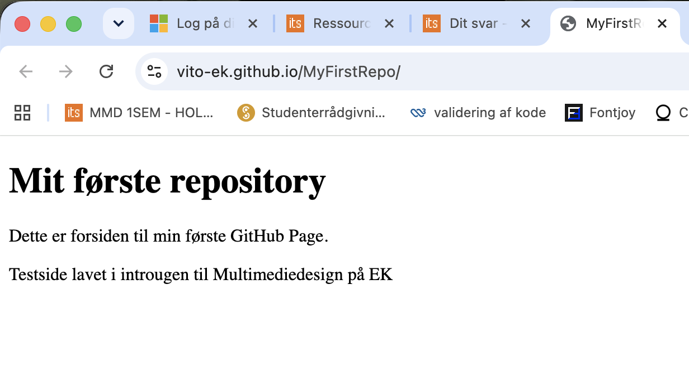

TEMA 1
INTROUGE
I introugen blev vi introduceret til multimediedesignerens arbejdsområder gennem oplæg fra tidligere studerende og fagpersoner. Derudover fik vi en introduktion til centrale værktøjer, herunder GitHub og GitHub Repository.
Første website og GitHub
Som en af de første opgaver oprettede vi en GitHub-konto og arbejdede med at uploade filer til et repository. Herefter publicerede vi vores første hjemmeside via GitHub Pages.
Formålet med opgaven var at opnå en grundlæggende forståelse for versionsstyring og publicering af websites, så vi var klar til det efterfølgende forløb om brugergrænseflader. Til opgaven fik vi udleveret en simpel HTML-template, som dannede grundlag for vores første website.

Præsentationskort
I denne opgave skulle vi udarbejde et præsentationskort om en medstuderende. Formålet var at installere og få en introduktion til Figma samt lære de grundlæggende funktioner i programmet at kende.
Samtidig fungerede opgaven som en social aktivitet, hvor vi lærte hinanden bedre at kende gennem interviews og præsentationer. De færdige præsentationskort blev efterfølgende delt med resten af holdet.

Ugeopgave – video
I denne opgave skulle vi planlægge, optage og redigere en kort video, hvor vi præsenterede os selv i gruppen. Videoen skulle tage udgangspunkt i en valgfri serie eller et tema, som vi brugte som inspiration til det visuelle udtryk.
Formålet med opgaven var at lære hinanden bedre at kende gennem en kreativ multimedieproduktion samt at få en grundlæggende introduktion til planlægning, optagelse og redigering af video. Derudover havde opgaven fokus på forståelse af ophavsret og brug af materiale.
Den færdige video blev efterfølgende vist for resten af holdet.